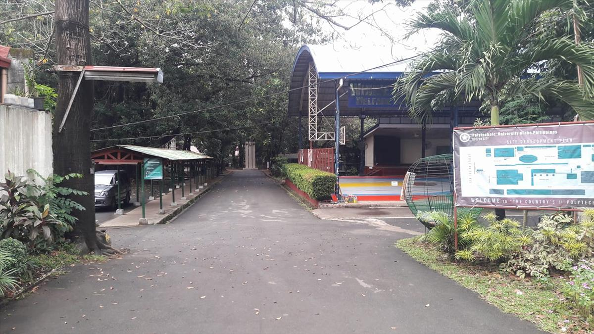

About Us
Polytechnic University of the Philippines Quezon City (abbreviated as PUPQC; also known as PUP Commonwealth Campus) is one of the satellite campuses of the Polytechnic University of the Philippines located in Commonwealth, Quezon City, Philippines. It was established in 1997. It confers undergraduate and diploma degrees.
PUPQC was established through the generosity and benevolence of Walter Rothlehner, a German church leader who donated his property in Barangay Commonwealth, Quezon City to PUP. The campus lot with an area of 1.9 hectares is donated by SIKHAY, an association led by Rev. Fr. Joel Tabora. The PUP Open University was tasked to administer and maintain the campus and its facilities.
Academic Programs

The PUP Quezon City Campus is a pantheon of concrete success towards the struggle in people’s fight against ignorance. As enshrined on the Deed of Assignment on 24 March 1997, that is, “to establish a branch or an extension of PUP at the National Government Center with a mandate to bring quality education and subsidized tuition fees to the urban poor communities of Quezon City, with priority given to those from the NGCHP.” Since its establishment in 1997, PUP Quezon City continues to produce quality and globally competitive graduates in the areas of education, information technology, management, marketing, entrepreneurship and office management technology. Likewise, true to the University’s mandate as Pamantasan ng Bayan, its graduate degree thru the Open University education system increased by offering two additional programs including the first program offering as practical alternative venue from PUP Main Campus.
The PUP Quezon City Campus is a pantheon of concrete success towards the struggle in people’s fight against ignorance. As enshrined on the Deed of Assignment on 24 March 1997, that is, “to establish a branch or an extension of PUP at the National Government Center with a mandate to bring quality education and subsidized tuition fees to the urban poor communities of Quezon City, with priority given to those from the NGCHP.” Since its establishment in 1997, PUP Quezon City continues to produce quality and globally competitive graduates in the areas of education, information technology, management, marketing, entrepreneurship and office management technology. Likewise, true to the University’s mandate as Pamantasan ng Bayan, its graduate degree thru the Open University education system increased by offering two additional programs including the first program offering as practical alternative venue from PUP Main Campus.
Admissions

ATTENTION!!!
PUPCET Applicants for AY 2024-2025. Application period: January 20 to March 31, 2024 To Apply, Visit https://iapply.pup.edu.ph/signin Note: Read Carefully the PUPCET Guidelines for queries, email to: pupqc.admission@pup.edu.ph
Community
PUP is a public, non-sectarian, non-profit institution of higher learning primarily tasked with harnessing the tremendous human resources potential of the nation by improving the physical, intellectual and material well-being of the individual through higher occupational, technical and professional instruction and training in the applied arts and sciences related to the fields of commerce, business administration, and technology.
The University promotes applied research, advanced studies and progressive leadership in the stated fields. We also offer ladder-type higher vocational, distance learning (open university system), technical and professional programs in the area of business and distributive arts, education and the social sciences related to the fields of commerce, business administration and other polytechnic areas. Furthermore, the University takes steps to enrich the academic program in other fields of study and adopts a polytechnic program of education designed to provide the individual with employable skills and managerial know-how in order to make them creative, productive and self-reliant.
PUP operates year-round with two semesters and a summer. Summer sessions depend on the course and on the campus. The University employs 1,483 full-time and part-time faculty members with a few of the full-time faculty holding administrative positions. There are 707 regular and casual administrative employees who provide support services to the University population. The faculty spends two-thirds of their time in teaching and one-third in research and extension activities.
News and Announcements
With the ongoing infrastructure project "REHABILITATION/RENOVATION OF MULTI-PURPOSE BUILDING AT PUP QC", another promise delivered project from the Office of Cong. Ralph Wendel P. Tulfo, Quezon City's 2nd District Representative headed by Atty. Joren Lex A. Tan, Chief of Staff, is the construction of a 4-storey Academic Building. The visit from the DPWH Quezon City First District Engineering Office yesterday guarantees that the project will commence soon this year once the requirements are completed. Considering the state of public tertiary education, such a project is a big help for the campus with the insufficiency of classrooms. Again, our sincere gratitude for a Bago, Progresibo at Walang Korupsyon infrastructure development project inside the PUP Quezon City Campus that is responsive to the needs of the academic community!!
Contact Us

Just click the related links of PUPQC below: